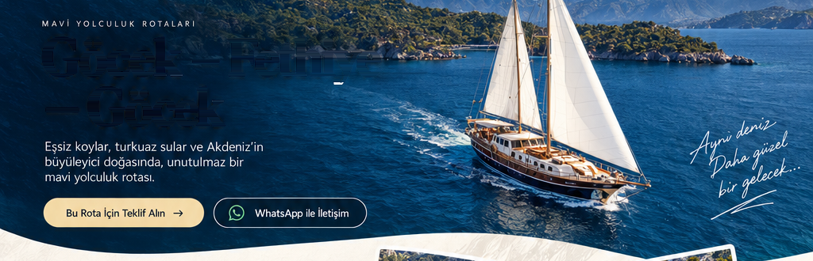
MAVİ YOLCULUK ROTALARI
Göcek – Fethiye – Göcek
Eşsiz koylar, turkuaz sular ve Akdeniz’in büyüleyici doğasında unutulmaz bir mavi yolculuk rotası.
Bu Rota İçin Teklif Alın →GÖCEK — FETHİYE — GÖCEK
Koyların Ritminde Bir Yolculuk
Göcek’in sakin koylarından Fethiye’nin eşsiz manzaralarına uzanan bu rota, her gün yeni bir koy, yeni bir manzara ve daha derin bir mavi sunar. Doğanın ritmine uyum sağlayarak, denizin, güneşin ve özgürlüğün keyfini yaşayın.
ROTA ÜZERİNDEKİ ÖNE ÇIKAN DURAKLAR
Her durakta yeni bir hikâye
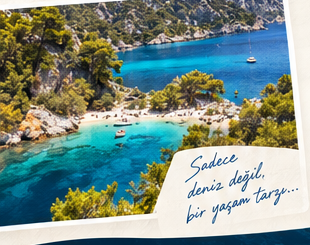
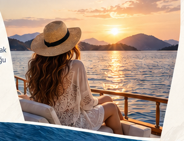
MAVİ, SİZE ÇOK YAKIŞACAK
Bu Rota İçin Teklif Alın
Sizin için en uygun tarih ve detaylarla özel bir mavi yolculuk planlayalım.
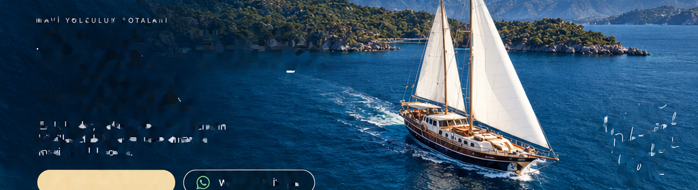
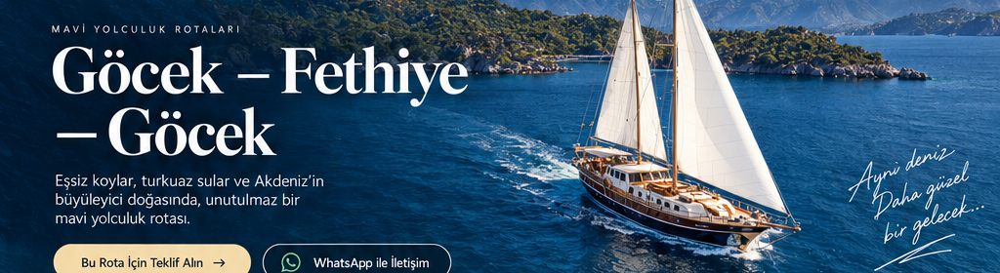
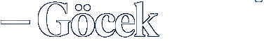
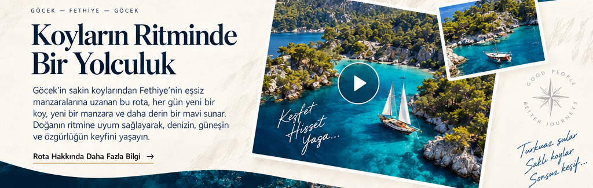
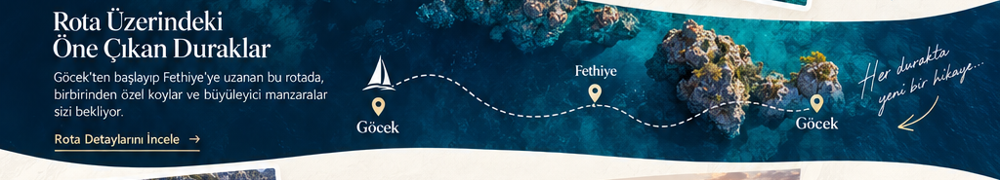
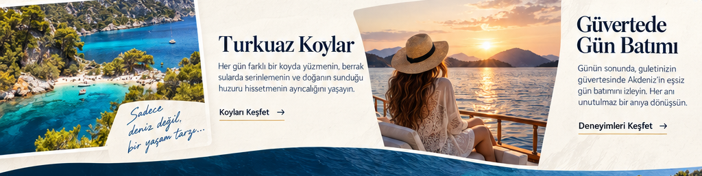
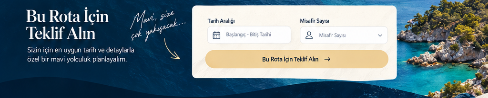
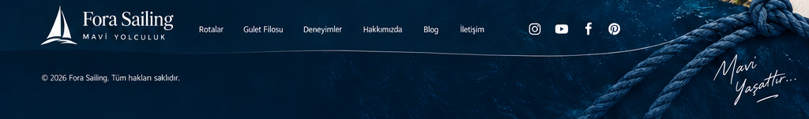
Göcek – Fethiye – Göcek
Eşsiz koylar, turkuaz sular ve Akdeniz’in büyüleyici doğasında unutulmaz bir mavi yolculuk rotası.
Koyların Ritminde Bir Yolculuk
Göcek’in sakin koylarından Fethiye’nin eşsiz manzaralarına uzanan bu rota, her gün yeni bir koy, yeni bir manzara ve daha derin bir mavi sunar.
Rota Üzerindeki Öne Çıkan Duraklar
Göcek, Fethiye ve Göcek.